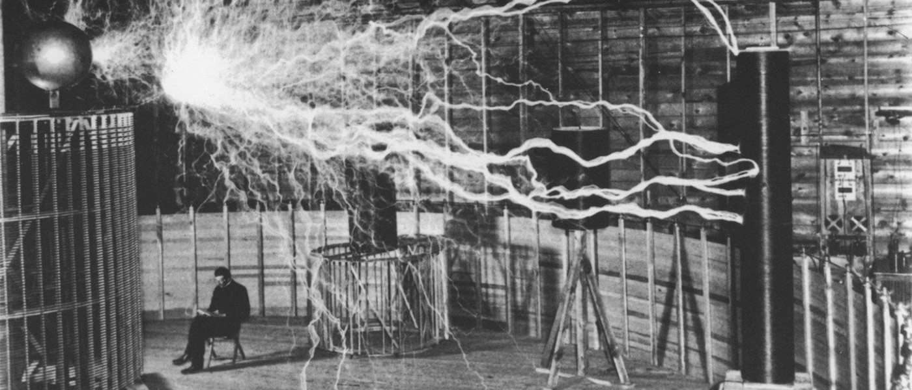

Nikola Tesla
"EL HOMBRE QUE ILUMINO EL MUNDO"

El genio de la electricidad.
Aquí hay una línea de tiempo de la vida de Nikola Tesla
- 1856 - Nace Nikola Tesla
- 1875 - Tesla se inscribe en el Politécnico de Austria y comenzó sus estudios en ingeniería mecánica y eléctrica.
- 1882 - Tesla se mudó a París para trabajar como ingeniero de la Compañía Continental Edison, diseñando mejoras a los equipos eléctricos traídos al extranjero a partir de las ideas de Edison.
- 1882 - Nikola Tesla identificó el principio del campo de inducción magnética giratoria utilizado en los alternadores y fue pionero en el uso de esta fuerza de campo electromagnético giratorio e inductor para generar torque en máquinas rotativas.
- 1884 - Tesla llegó por primera vez a los Estados Unidos, a la ciudad de Nueva York con poco más que una carta de recomendación de Charles Batchelor, un ex empleador.
- 1885 - Nikola Tesla deja de trabajar para Edison
- 1886 - Nikola Tesla forma Tesla Electric Light and Manufacturing Company
- 1887 - Comienza la era de la Guerra de las Corrientes
- 1887 - Tesla comenzó a investigar lo que luego se llamaría rayos X utilizando sus propios tubos de vacío de terminal única
- 1888 - Nikola Tesla pronunció una conferencia titulada Un nuevo sistema de motores y transformadores de corriente alterna, que describe el equipo que permitió la generación y el uso eficiente de corrientes alternas polifásicas.
- 1891 - Nikola Tesla patenta la bobina de Tesla
- 1893 - Nikola Tesla y George Westinghouse impulsan la Exposición Colombina del Mundo
- 1899 - Tesla decidió mudarse y comenzó a investigar en Colorado Springs, donde tendría espacio para sus experimentos de alta tensión y alta frecuencia.
- 1901 - Comienza la construcción de la Torre Wardenclyffe de Tesla
- 1913 - Turbina sin cuchillas Patente de Tesla
- 1915 - Tesla y Edison ignorados por el comité del Premio Nobel
- 1934 - The New York Times publicita la investigación del haz de partículas de Nikola Tesla
- 1943 - Nikola Tesla muere
«La distancia, que es el impedimento principal del progreso de la humanidad, será completamente superada, en palabra y acción. La humanidad estará unida, las guerras serán imposibles y la paz reinará en todo el planeta».
--Nikola Tesla
Si deseas conocer más de este grandioso personaje puedes ingresar a este link de Wikipedia